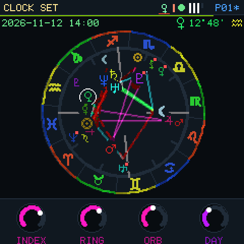
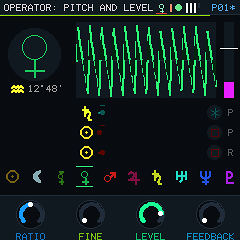
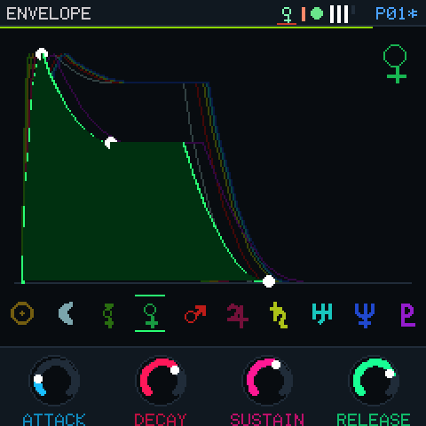
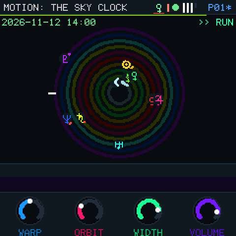
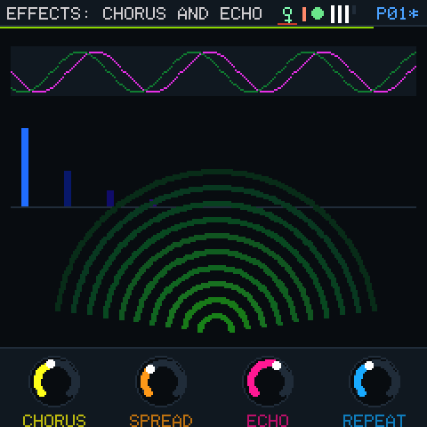
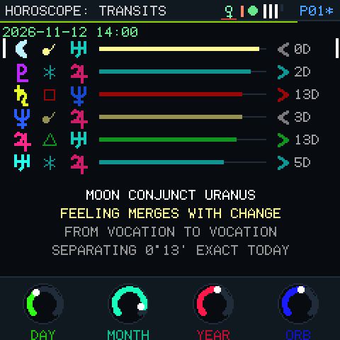
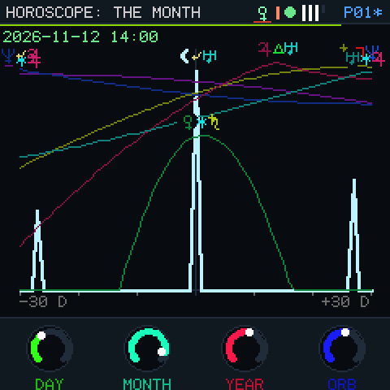
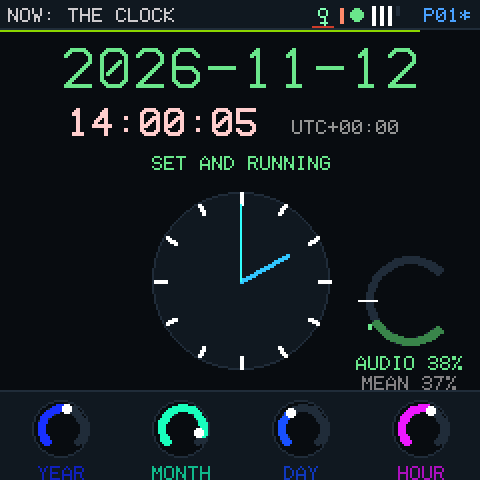

FM SYNTHESIS · ASTRONOMY · M-VAVE FM-1 · {{VERSION}}
ASTRA.
Ten planets. Ten FM operators. The aspects between them are the algorithm.
Your FM-1 computes the sky itself, casts your birth chart, and wires its synthesizer from it: every trine a modulation, every square a ring, every return to a birth place a feedback loop. Turn the sky and the sound turns with it.

01 / PLAY IT HERE
The firmware itself, in the browser.
This is the installable package running in fm1-emu, an emulator of the FM-1's chip. Click it, hold a few keys, then turn the ALGORITHM encoder: the wires on the wheel change, and so does the sound. GLO sets the clock and your birth data; SEQ reads the transits.
Open the emulator on its own page ↗ · It runs at the FM-1's own 240 MHz: ASTRA uses about half of the chip for its sound, so it needs a fast computer to play in real time (the page says when yours cannot keep up). At a lower clock the emulated chip itself is too slow for four voices and the sound breaks up: that is the emulator's clock, not the FM-1. The browser emulator is not a measure of the FM-1's CPU.
02 / THE ENGINE
A chart is a patch.
Four voices of ten operators each (forty operators every sample), rendered by the FM-1 itself in integer arithmetic, 44.1 kHz. Each operator is a body: Sun, Moon, Mercury, Venus, Mars, Jupiter, Saturn, Uranus, Neptune, Pluto.
Aspects route the operators.
Conjunctions modulate deeply, trines flow, sextiles touch lightly, squares ring-modulate, oppositions loop both ways. The faster body modulates the slower; a closer aspect cuts deeper; an applying one deeper than a separating one; a retrograde source inverts.
One sky, many wirings.
Free wiring, or the birth chart, the sky now, or the transits between them, each in twelve harmonic charts (longitudes times 1 to 12): every harmonic finds other aspects, so other routes.
Placements voice the operators.
Ratio from the solar house, detune from the degree, waveform from the element, envelope from the modality, level from dignity, feedback from domicile and retrograde. A cast patch is a starting point: every value has its knob.
The sky keeps moving.
The sky clock runs at real time, or up to five years a second, forward or back. Each operator swells as its planet returns to its birth place. The wheel is the stereo field: the ascendant left, the descendant right.
No topology is special.
Every operator hears two phase sources, one ring source and its own feedback, from any operator. Every loop is one sample long, so any wiring the sky makes is stable, and the cost never changes.
Chorus, echo, room.
A swept stereo chorus, a cross-fed tape echo that glides when you change it, a four-line reverb, and a soft knee into full scale. The audio interrupt takes 54 % of its 5.8 ms on the FM-1's measured instruction costs, and the clock page shows the real figure on your FM-1.
03 / SCREENS
Waves and line art, not numbers.
Captured from the firmware running in fm1-emu. Every knob turn changes a colour somewhere: tested on every page.







04 / CONTROLS
Every control, one page each.
| Control | What it does |
|---|---|
| HOME | The wheel: KNOB 1–4 = modulation index, ring depth, orb, and the sky's day. |
| EDIT | The operator SELECT holds, four pages (press again): ratio, fine, level, feedback · wave, output, detune, velocity · free wires · ring source, ring, key scaling, mute. |
| ENV · LFO · FX | Envelope · motion (sky clock warp, orbit, stereo width, volume; LFO and bend) · effects (chorus, echo, room). |
| SEQ | The horoscope: transits, the month around, the birth chart, the Moon and signs. KNOB 1–3 move the sky by days, months, years; 4 sets the orb. |
| GLO | The clock (PLAY: this is now) · birth date and time · birth place and time zone · house system, zodiac (tropical or sidereal Lahiri), display zone. |
| SELECT | The operator (body); on the horoscope, the transit; on the clock and birth pages, the minute. |
| ALGORITHM | 37 algorithms: FREE, then BIRTH, SKY and TRANSIT charts, each in harmonics 1–12. |
| PRESETS · SAVE | 64 slots. An unsaved slot is cast from your chart, each in its own character. SAVE twice saves. |
| PLAY · REC | Run or hold the sky · back to now. On the birth pages REC casts a patch from your chart. |
| SEL · ARP · OCT | Mute the operator · latch the keys · octave. |
| Readings | Every line names its source: the aspect, the houses, the time to exact. Placements add the Tarot trumps of Crowley's 777 (1909) for the body and its sign, their titles quoted. |
| Keys, MIDI | 27 keys play four voices of ten operators; USB and TRS MIDI: notes, velocity, bend, mod wheel (vibrato and tremolo), sustain, program change. |
05 / THE SKY
Computed on the FM-1, offline.
No network, no ephemeris download: the FM-1's own processor computes the Sun, the Moon, Mercury to Pluto and the Moon's node in integer arithmetic, for any instant from 1800 to 2200, and the houses in seven systems (Placidus, Koch, Regiomontanus, Campanus, Porphyry, Equal, Whole Sign), tropical or sidereal. The emulator test checks that the firmware's longitudes equal, to the bit, the host build's, and the host build is measured against Astronomy Engine:
| Body | Method | Largest error, 120 dates 1800–2200 |
|---|---|---|
| Sun, Mercury … Neptune | Truncated VSOP87B, light time, aberration, precession, nutation | under 2″ |
| Pluto | Chebyshev fit of its barycentric orbit | under 5″ |
| Moon | Meeus ch. 47, the 34 largest terms | 38″ |
| Houses | Closed forms and iteration, checked against their geometric definitions | under 5″ |
Astronomy here is computation. The horoscope readings are symbolic keyword rules (each line names the aspect and houses it comes from), not predictions. The FM-1 has no battery clock: a time restored after power-off is marked unconfirmed until you confirm it.
VERSION {{VERSION}} / INSTALL WITH CARE
Put the sky in your FM-1.
{{BUILD}}
SHA-256 {{SHA256}}
ASTRA FM-1 is an early development build. It is tested in the emulator, not yet on a physical FM-1. Install it only if you are ready to use the USB rescue: hold OCT− while switching on. The installer needs Chrome or Edge (Web MIDI) and a USB data cable. It can also take you back to the official V15.
WITH GRATITUDE
Built on generous work.
ASTRA runs on Dinghy by zvenson (GPL-3.0-only), whose base comes from Felucca by Leo Kuroshita (Hügelton Instruments) and SLOOP (isod89). The installer is Felucca's web installer. The emulator is fm1-emu by Joakim Eriksson (MIT). The planetary series are VSOP87 (Bretagnon and Francou) as truncated by Astronomy Engine (Don Cross, MIT), which also supplies the test references; the Moon and the calendar follow Jean Meeus's Astronomical Algorithms.